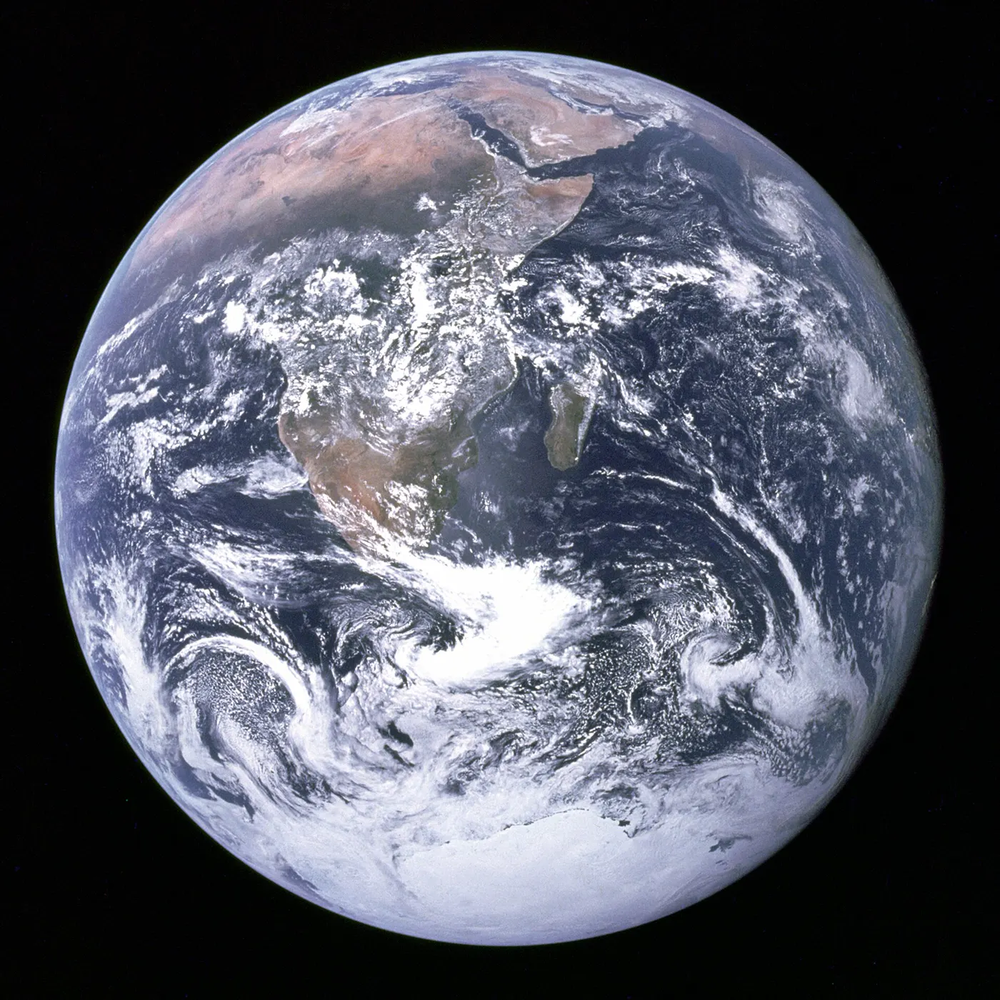

Du Cambrien à aujourd’hui
Temps profond
Un trait lumineux traverse 539 millions d’années, et les animaux voyagent avec leurs continents. Les cinq grandes extinctions sont marquées au passage. Voici qui vivait, qui a disparu, et où se trouvait la terre.
Photographie d’Apollo 17, 7 décembre 1972. NASA, domaine public.
La Terre a enduré environ 4,5 milliards d’années et à peu près 20 tours autour du centre de la Voie lactée, et elle est encore d’un seul tenant.
Environ 4,5 milliards d’années arrondit l’âge de 4,54 milliards d’années de l’U.S. Geological Survey. NASA Science donne environ 230 millions d’années pour un tour de la Voie lactée. Une page plus ancienne de la NASA donne 250 millions d’années. À peu près 20 tours, c’est cet âge divisé par une année galactique dans cet intervalle. USGS: Age of the Earth · NASA Science: about 230 million years · NASA: 250 million years
Retour aux dinosaures · BorealopeltaNigersaurusTriceratopsStegosaurus